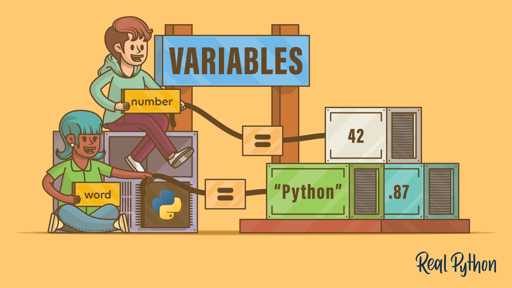
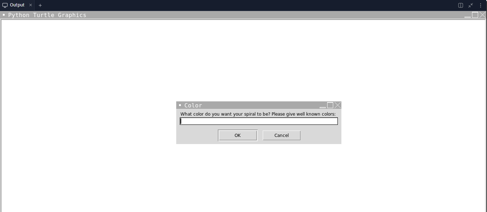

Variables

Variables are used as a way to store and manipulate data. They can store all types of data. Think of it as
a box to store information, with a name so that you can find it and its contents again. Here is an example
of making a variable: student = "Bob". In this example, student is the name of
the variable and always goes on the left side of the equal sign. "Bob" is the string value
being stored in the variable and always goes on the right side of the equal sign.
If you want to get more technical, a variable is a name given to a memory location. Basically, what that means is that the data is stored somewhere in the computer's memory and assigning it to a variable just allows you to be able to find that data again later in the program.
It's not necessary to create a variable for every piece of data in your program. Sometimes you will have information that you don't need to reference again. But other times, you will need to find and manipulate data that you have created earlier(you will see what I mean by this in the program you are making today), and for that, variables are very useful to have. Additionally, if you have the same value in multiple locations in the same program, it would be helpful to make that value and variable and use the variable throughout your program. For example, if you are making a website and you have one color for multiple things in your code, you can make that color a variable at the top of your program and refer to the variable when assigning a color to something. If you ever want to change that color, you can just change the variable color, so you won't have to go through and change that color every single place it is used.
Variables are created the fist time the are assigned to a value. After it is created, the value of a variable can be changed: you can add things to it, take things out, or change the contents completely.
Variable Naming Conventions
There are some rules for how you can name your varibles in Python:
-
Must start with a letter or underscore character: You can't have a variable starting with a
numerical character or any other special character.
@namecannot be a variable name, Python will think of it as something else. -
Can only contain alpha-numeric characters and underscores:
at_homecan be the name of a variable, butat&homecannot because it contains the ampersand character. -
Variable names are case sensitive:
name,Name, andNAMEare considered three different variables in Python. - Cannot use keywords as names: There are certain keywords in Python that cannot be used as variable names, Python will throw an error at you.
-
Variable names should be short and descriptive, and should use underscores: This isn't a technical
thing, but it is an "unspoken rule" used by Python programmers. Something like
TheNameOfTheStudentis fine for the computer to understand, but for other programmers,student_nameis more concise, so it makes more sense. Some languages use camel case to separate words, but Python uses underscores.
Spiral Upgrade
Now that you know how to use variables, you are going to use them to make a program that creates spirals based on what the user wants. Below is the code for it:
import turtle
width = input("How wide do you want the lines of your spiral to be? Please give an integer: ")
width = width.lower()
color = input("What color do you want the background of your spiral to be? Please give well known colors: ")
color = color.lower()
lines = input("How big do you want your spiral to be(how many lines) Give a number: ")
lines = int(lines)
window = turtle.Screen()
window.title("Spiral Maker")
window.setup(200, 200)
window.bgcolor(color)
t = turtle.Turtle()
t.speed(0)
t.width(width)
t.pencolor("white")
for x in range(lines):
t.forward(x + 3)
t.left(360/4 + 5)
turtle.mainloop()
As we saw before, the input() function asks the user for input for a question you put as the
argument(in the parenthesis). Whatever input the user gives is being stored in variables width,
color, and lines. In all three cases, the line after the variable assignment cleans
up the user input. .lower() is a function that makes everything in the variable lowercase, so
turtle can easily understand what the user is saying. int() is a function that makes a string into
an integer. When you ask for and store input, even if the use gives a numerical value, it will still be stored
as a string. So you have to convert it into an integer so the computer can evaluate it.
After getting input and storing it in different variables, we are just setting up the turtle windw and pen.
But in this case, intead of using actual colors and numbers as arguments, we are using the variables that we defined
earlier. When the computer reads a line like window.bgcolor(color), it says ok, the background color
of the window is color, so it goes into memory and finds a value named "color", and uses that value
to color the background of the window.
After the pen and window are set up, the next three lines make the sprial. We will get into more detail about this later, but what this code is saying is that for the number of lines specified by the user, for each line, go forward a certain number of pixels(that increases with each line), and turn left a certain number of degrees. In this case, since we are dividing 360 by 4, it will be a square spiral, and the +5 at the end just increases the angle a little bit so that the spiral is tilted.
Custom Spiral Maker
For this program, your goal is to create a custom spiral maker, similar to the one above. For this however, try to use a function we have not covered in class: turtle.numinput() and turtle.textinput(). Here are some links to help you get started:
turtle.textinput and turtle.numinput are fancier ways of collecting input from the user.
Instead of having them type answers into Replit shell, these functions will open a little dialouge window on the main
screen for the user to type their answer into.
As a programmer, you will not always have a teacher to teach you how to do everything, you will need to be able to figure it out on your own by using Google as a resource. This is a good way to practice doing that!
Instructions:
- Create a new program, import turtle, set up the turtle screen and pen.
- Use the turtle.textinput() to ask the user what color they want their spiral to be
- Tip: if Replit underlines this line of code saying “Argument of type "float | None" cannot be assigned to parameter "x" of type "ConvertibleToInt" in function "__new__"”, just ignore it. It will work when you run it.
- Using turtle.numinput(), ask the user what they want their angle of rotation to be
- Clean all the input that you receive from the user
- Create your spiral
Here's an example of what it should look like:
